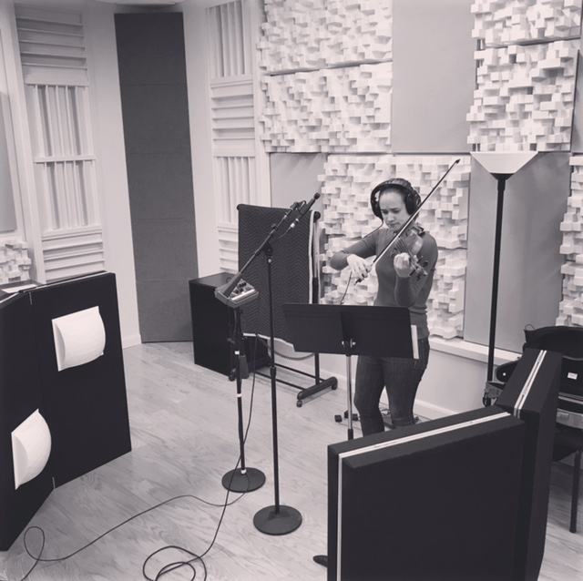

Enthusiastic | Growth-Mindsetted
An Artist's Approach to Programming
Kersti McGee
∇ ∇ ∇ 💻 Master's in Music and Aspiring Web Developer 🎹Δ Δ Δ
Research Assistant | University of Colorado. Mar 2018 – Present. Evaluating an ongoing field research study against a control group to best allocate resources for the enhancement of safety features in Denver neighborhoods. Denver, CO.
Student | Emily Griffith Technical College - Devetry. Mar 2018 – Present. Python3 Web Development Bootcamp. Denver, CO.
Master's in Violin Performance | University of Denver, Lamont School of Music, 2017. Denver, CO.
Other Skills | Kersti also enjoys tinkering with code at Code For Denver for the music nonprofit, Encorelink.org. A section violinist for the Wyoming Symphony Orchestra, she also performs violin gigs around town with friends in Denver.
